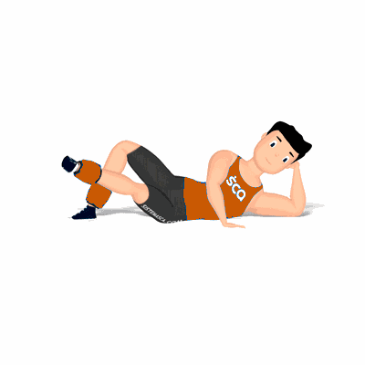

Adução Deitado com Caneleira

Exercício para fortalecimento e hipertrofia dos músculos da coxa, com enfoque a região interna próximo a virilha. Trabalha os músculos adutor longo.
Ficha Técnica
Tipo: Musculação
Grupo Muscular: Perna
Aparelho: Nenhum
Músculos: Nenhum
Como realizar
- Coloque uma caneleira em uma das penas na região próxima aos tornozelos;
- Deite lateralmente sobre um colchonete ou solo;
- Para maior conforto durante a execução, apoie o cotovelo no solo e utilize a mão de sustentação a cabeça;
- Realize o movimento de adução utilizando a perna mais próxima do solo que está com a caneleira;
- Eleve-a de forma lateral trazendo para dentro, realizando a contração máximo dos músculos;
- Retorne à posição inicial de forma controlada e repita os movimentos.
 RC STORE
RC STORE